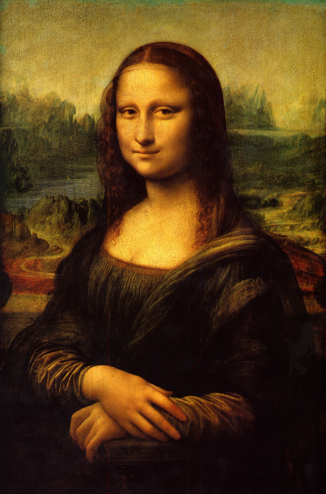
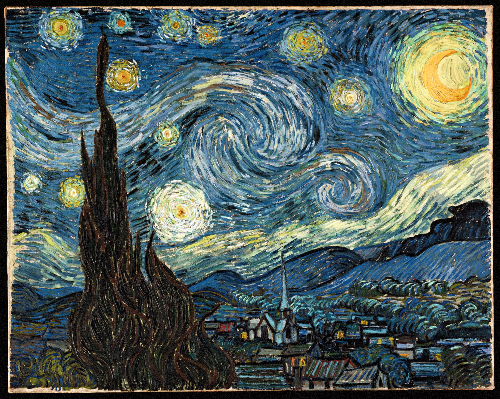
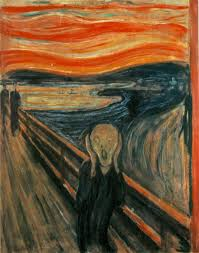
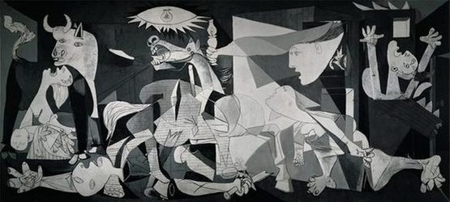

Renesansa
Mona Lisa
Najpoznatija slika na svijetu, Leonarda da Vincija. Nastala između 1503. i 1519., poznata po tajanstvenom smiješku i tehnici sfumato.
Saznaj višeDobrodošli u virtualnu galeriju umjetničkih pravaca – mjesto gdje možete istražiti razvoj umjetnosti kroz historiju. Svaki pravac predstavljen je kroz svoja najpoznatija djela i osnovne informacije o stilu, značaju i utjecaju na svijet umjetnosti.

Najpoznatija slika na svijetu, Leonarda da Vincija. Nastala između 1503. i 1519., poznata po tajanstvenom smiješku i tehnici sfumato.
Saznaj više
Remek-djelo baroknog Johannesa Vermeera iz 1665., često zvano "Mona Lisa sjevera".
Saznaj više
Impresija, izlazak sunca-jedno od najpoznatijih djela Claudea Moneta i slika koja je obilježila početak impresionizma.
Saznaj više
Jedno od najpoznatijih djela Vincent van Gogha iz 1889., prepoznatljivo po snažnim bojama, dinamičnim potezima kista i prikazu noćnog neba.
Saznaj više
Najprepoznatljivija slika Edvarda Muncha iz 1893. Simbol egzistencijalne tjeskobe modernog čovjeka uz viziju krvavocrvenoga neba.
Saznaj više
Monumentalna slika Pabla Picassa iz 1937. Snažna antiratna poruka u kubističkom stilu nastala nakon bombardovanja Guernice.
Saznaj više